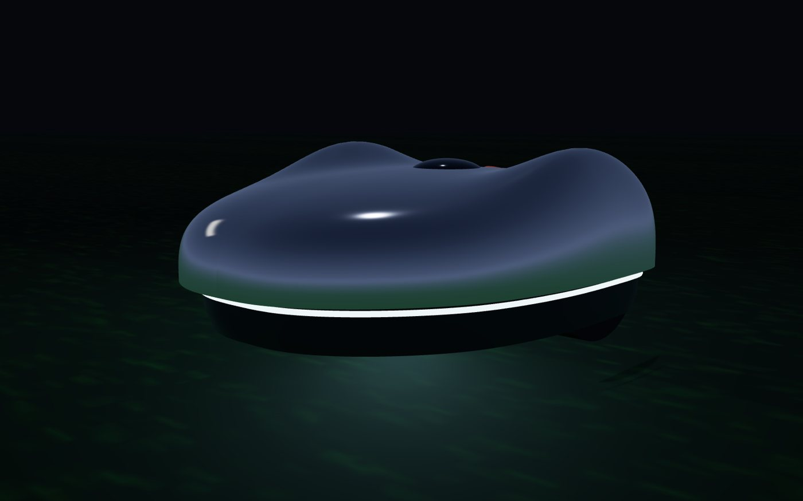
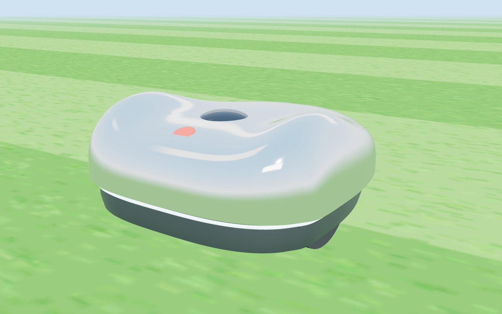
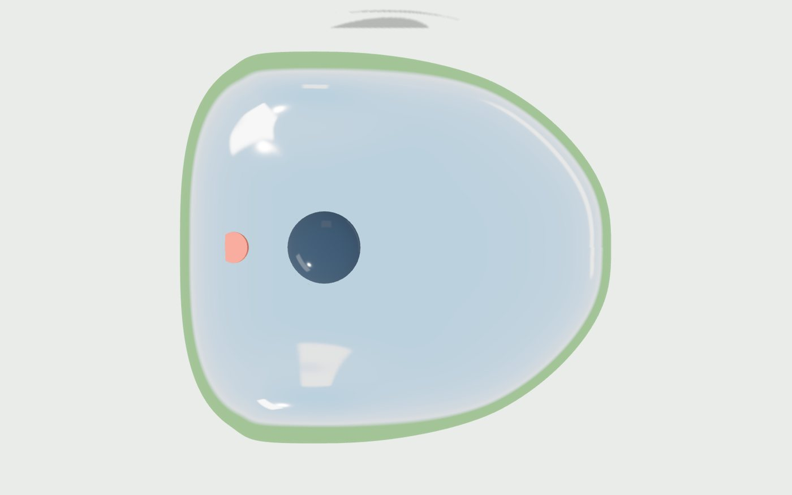
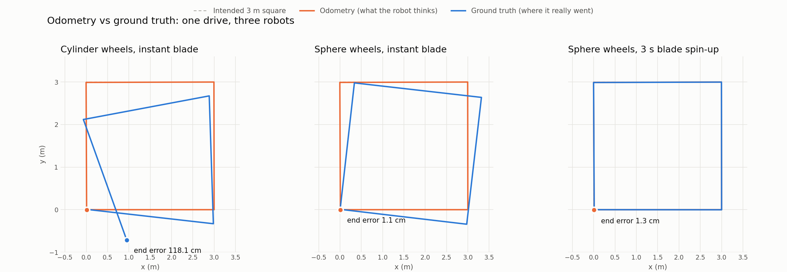
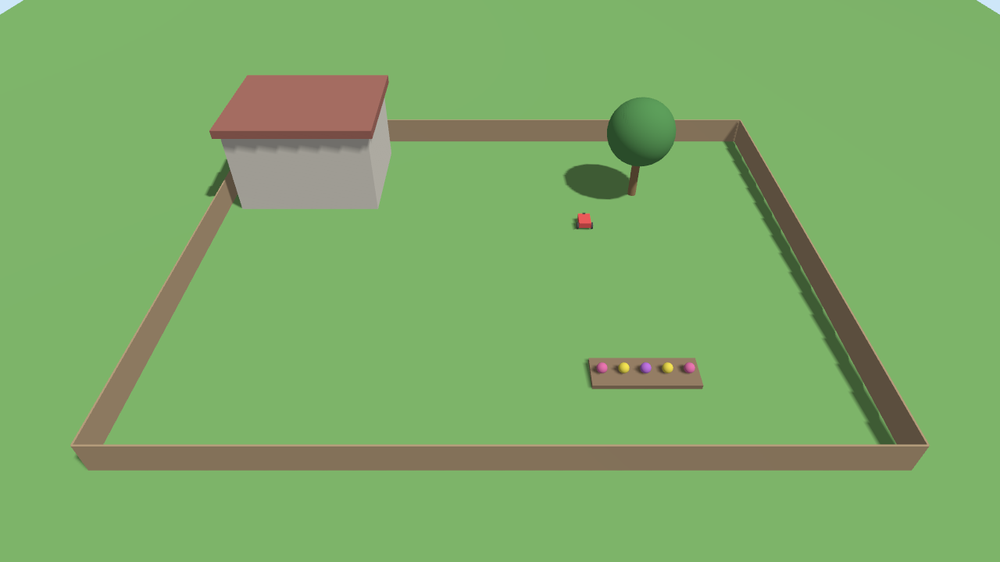

1.18 m1.1 cm
Wheels skidded in every turn
Odometry counted 90° and the robot really turned about 99°. Cylinder-shaped wheel contacts were unstable in the physics engine. Sphere contacts fixed it.
How it works · for the curious
Fauerbot is built in simulation first, measured with real telemetry, and documented all the way to a parts list for your own yard. No cloud, no closed boxes. Every bug we find goes in the devlog.
Design concept · M1
One seamless mirror shell over a dark skirt tucked so far in that the body hovers. A light seam all the way round tells you what it's doing from across the lawn.




A design concept rendered from the same procedural model the engineering drawings use. Not a product you can buy.
Found in simulation, before it cost money
The mower steers by wheel odometry, the way a real one does. Gazebo knows where it really went. On the first drive the two disagreed by more than a metre, and the robot had no idea.
1.18 m1.1 cm
Odometry counted 90° and the robot really turned about 99°. Cylinder-shaped wheel contacts were unstable in the physics engine. Sphere contacts fixed it.
6.7°0°
Spinning the blade from 0 to 300 rad/s in one step pushed back on the body. A 3-second spin-up before driving, as real mowers do, removed it.
48 cm1.3 cm
A rotated square still ends where it started. The report now checks the worst error along the whole path, not only the endpoint.

analysis/plot_paths.py over the recorded MCAP bags.Phase 4 in simulation
Headland laps round the edge, stripes across the middle, a ring round every flowerbed and tree. When the battery runs low it drives back to the dock, charges, and carries on where it stopped. Every number below comes from a pass/fail report over a recorded run.
95.5%
Measured from the blade's real path in Gazebo, on a 5 cm grid. No keep-out incursions; stays within 15 cm of the planned line while mowing.
1.1 cm
It backs off, lines up 1 m out on the dock's axis and creeps in at 0.15 m/s. Contacts must stay closed for 0.15 s before it counts.
~576 m²
208 mWh per square metre, from a battery model with a real voltage curve and internal resistance. It never dropped below 13% charge.

analysis/coverage_report.py.
analysis/power_report.py.The plan
The parts most likely to hurt someone are the blade guard, the body and the battery. A cheap commercial mower has already solved those, so the first real robot is a brain transplant, and the blade stays unplugged until the safety checklist passes.
Gazebo yard, ROS 2 Jazzy, telemetry into Elasticsearch, pass/fail reports. It mows, avoids obstacles, docks and charges, and it has found every bug on this page before any hardware existed.
Raspberry Pi 5, RTK GNSS and an IMU on a garden cart. Survey the lawn boundary to centimetres, with no motors at all.
A used YardForce Classic 500 with the open-source OpenMower mainboard and our ROS 2 stack. Drive, map, dock.
Only after every item on the safety checklist passes and is logged. Supervised mowing first.
Our own frame and motor controllers, matched to the sim. Only if the commercial body holds us back.


Engineering, in the open
The drawings are generated from the code. The software diagram checks every arrow against the running robot's message graph, so it can't drift.
Swipe a diagram sideways, or tap it to open it full size.
What to buy · prices checked 8 Nov 2026
Start with the sensors. Localization is the hard part, and you can test it by pushing a cart around the lawn.
| Part | Why | Price |
|---|---|---|
| Raspberry Pi 5, 8 GB | Runs the same ROS 2 container as the simulation | $175 |
| simpleRTK2B starter kit (u-blox ZED-F9P) | Centimetre-level RTK GNSS, antenna included | ≈ $235 |
| BNO085 9-DoF IMU | Heading and tilt; later the tilt-safety input | $29.50 |
| RTK corrections | A free state network where available, or your own base station | $0–195 |
| PSU, cooler, NVMe SSD | Power, heat in the sun, room for recorded runs | ~$40–70 |
| Stage H1 total, depending on what you already own | ≈ $500–700 | |
US dollars, rounded; euro prices converted at an approximate $1.12 per € (Nov 2026). Prices move. Raspberry Pi raised prices several times in 2025–26. The full list, with sources and the H2 robot parts, is in hardware/bom.md.
Safety
The blade motor's enable line runs through a chain of normally-closed contacts. Any one of them stops the blade, and a cut wire counts as unsafe.
Two buttons, no app needed. STOP latches: in the sim the wheels stop in 0.2 s and the blade is told to stop at once, and releasing it leaves the robot paused, never moving on its own. HOME/GO: a short press pauses or resumes, a long press sends it to the dock. The light ring shows what it's doing.
This is a hobby project, not a certified product. The checklist in hardware/safety.md is a minimum, and the build manual's blade-on gate must pass first.
Open source
src/ ROS 2 packages: robot, sim, telemetry
analysis/ pass/fail reports over recorded runs
hardware/ parts list, electrical, mechanical, safety
blog/ the devlog and the build manual (this site)
docs/ telemetry contracts, business, open source
website/ this page
observability/ Elasticsearch and Kibana as codeRun the whole experiment yourself, with no hardware:
make build up
make drive-runIt drives a square in Gazebo, records the run, ships the telemetry and prints a pass/fail report.
The source repository is private while the project is young; it will be published under Apache-2.0 (software) and CERN-OHL-S (hardware). We credit and build on OpenMower.